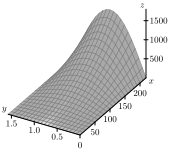
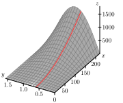
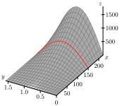
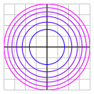
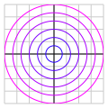

What is a function of several variables? What do we mean by the domain of a function of several variables?
How do we find the distance between two points in \(\R^3\text{?}\) What is the equation of a sphere in \(\R^3\text{?}\)
What is a trace of a function of two variables? What does a trace tell us about a function?
What is a level curve of a function of two variables? What does a level curve tell us about a function?
Much of algebra, precalclus, and calculus has been focused on working with functions that have a scalar input and a scalar output. In previous chapter, we expanded this to address functions with a scalar input and a vector output. The calculus of these functions was not very interesting since we applied limits, derivatives, and integrals to these functions componontwise.
Many problems involve a much larger space of inputs and outputs. For instance, when studying weather patterns and behavior it is useful to measure temperature or atmospheric pressure. Both temperature and pressure are scalar measurements (measured by a single number) that will vary over three dimensions (north/south, east/west, and over elevation). Temperature can be given by a function with a location in three dimensions as the input and the temperature at that location (a scalar) as an output. Wind direction and strength are also very important when working with weather patterns. Wind is measured with a vector (magnitude and direction) and also varies with location in a three dimensional space. So wind would be given by a function with a location in 3D as an input and a vector as an output. We will look at the calculus of multivariable functions with scalar outputs (like temperature and pressure) in the next couple of chapters and will look at studying functions with multivariable inputs and outputs in the last chapter.
Throughout our mathematical careers we have studied functions of a single variable. We define a function of one variable as a rule that assigns exactly one output to each input. We analyze these functions by looking at their graphs, calculating limits, differentiating, integrating, and more. Functions of several variables will be the main focus of Chapters 10 and 11, where we will analyze these functions by looking at their graphs, calculating limits, differentiating, integrating, and more. We will see that many of the ideas from single variable calculus translate well to functions of several variables, but we will have to make some adjustments as well. In this chapter we introduce functions of several variables and then discuss some of the tools (vectors and vector-valued functions) that will help us understand and analyze functions of several variables.
Preview Activity11.1.1.
Suppose you invest money in an account that pays 5% interest compounded continuously. If you invest \(P\) dollars in the account, the amount \(A\) of money in the account after \(t\) years is given by
\begin{equation*}
A = Pe^{0.05t}.
\end{equation*}
The variables \(P\) and \(t\) are independent of each other, so using functional notation we write
Find the amount of money in the account after 7 years if you originally invest 1000 dollars.
Evaluate \(A(5000,8)\text{.}\) Explain in words what this calculation represents.
Now consider only the situation where the amount invested is fixed at 1000 dollars. Calculate the amount of money in the account after \(t\) years as indicated in Table11.1.1. Round payments to the nearest penny.
Table11.1.1.Amount of money in an account with an initial investment of 1000 dollars.
Duration (in years)
2
3
4
5
6
Amount (dollars)
Now consider the situation where we want to know the amount of money in the account after 10 years given various initial investments. Calculate the amount of money in the account as indicated in Table11.1.2. Round payments to the nearest penny.
Table11.1.2.Amount of money in an account after 10 years.
Initial investment (dollars)
500
1000
5000
7500
10000
Amount (dollars)
Describe as best you can the combinations of initial investments and time that result in an account containing $10,000.
Up to this point we have been concerned with functions of a single variable. What defined such a function is that every input in the domain produced a unique output in the range. We saw similar behavior in Preview Activity11.1.1, where each pair \((P,t)\) of inputs produces a unique output \(A(P,t)\text{.}\) Additionally, the two variables \(P\) and \(t\) had no real relation to each other. That is, we could choose any value of \(P\) without considering what value \(t\) might have, and we could select any value of \(t\) to use without regard to what value \(P\) might have. For that reason we say that the variables \(t\) and \(P\) are independent of each other. Thus, we call \(A = A(P,t)\) a function of the two independent variables \(P\) and \(t\text{.}\) This is the key idea in defining a function of two independent variables.
Definition11.1.5.
A function \(f\) of two independent variables is a rule that assigns to each ordered pair \((x,y)\) in some set \(D\) exactly one real number \(f(x,y)\text{.}\)
There is, of course, no reason to restrict ourselves to functions of only two variableswe can use any number of variables we like. For example,
defines \(f\) as a function of the three variables \(x\text{,}\)\(y\text{,}\) and \(z\text{.}\) In general, a function of \(n\) independent variables is a rule that assigns to an ordered \(n\)-tuple \((x_1, x_2, \ldots, x_n)\) in some set \(D\) exactly one real number.
As with functions of a single variable, it is important to understand the set of inputs for which the function is defined.
Definition11.1.6.
The domain of a function \(f\) is the set of all inputs at which the function is defined.
Activity11.1.2.
Identify the domain of each of the following functions. Draw a picture of each domain in the \(xy\)-plane.
There are no x or y values that make the function undefined, so the domain is all ordered pairs of real numbers.
The square root function is undefined for inputs that result in a negative radicand. Since \(x^{2}+y{2} \geq 0\text{,}\) there are no \((x,y)\) that will result in a negative radicand. Therefore, the domain is all real ordered pairs of real numbers.
The rational function is undefined when the denominator is zero or undefined. The rational function is defined when \(x^{2}-y^{2} = (x-y)(x+y) \neq 0\text{.}\) So \((x-y) \neq 0\) and \((x+y) \neq 0\text{.}\) Therefore, \(x \neq y\) and \(x \neq - y\text{.}\)
The rational function is undefined then the denominator is zero or undefined. The denominator is only defined when \(1-xy^{2} \geq 0\text{.}\) Therefore, \(xy^{2} \leq 1\) or \(x \leq \frac{1}{y^{2}}\text{.}\) But the denominator cannot be equal to zero, so the domain is all ordered pairs such that \(x \lt \frac{1}{y^{2}}\text{.}\)
Subsection11.1.2Representing Functions of Two Variables
One of the techniques we use to study functions of one variable is to create a table of values. We can do the same for functions of two variables, except that our tables will have to allow us to keep track of both input variables. We can do this with a 2-dimensional table, where we list the \(x\)-values down the first column and the \(y\)-values across the first row. As an example, suppose we launch a projectile, using a golf club, a cannon, or some other device, from ground level. Under ideal conditions (ignoring wind resistance, spin, or any other forces except the force of gravity) the horizontal distance the object will travel depends on the initial velocity \(x\) the object is given, and the angle \(y\) at which it is launched. If we let \(f\) represent the horizontal distance the object travels, then \(f\) is a function of the two variables \(x\) and \(y\text{,}\) and we represent \(f\) in functional notation by
where \(g\) is the acceleration due to gravity. (Note that \(g\) is constant, 32 feet per second squared. We will derive this equation in a later section.) To create a table of values for \(f\text{,}\) we list the \(x\)-values down the first column and the \(y\)-values across the first row. The value \(f(x,y)\) is then displayed in the location where the \(x\) row intersects the \(y\) column, as shown in Table11.1.7 (where we measure \(x\) in feet per second and \(y\) in radians).
Table11.1.7.Values of \(f(x,y) = \frac{x^2 \sin(2y)}{g}\text{.}\)
\(x\backslash y\)
\(0.2\)
\(0.4\)
\(0.6\)
\(0.8\)
\(1.0\)
\(1.2\)
\(1.4\)
25
7.6
14.0
18.2
19.5
17.8
13.2
6.5
50
30.4
56.0
72.8
78.1
71.0
26.2
75
68.4
163.8
175.7
159.8
118.7
58.9
100
121.7
224.2
291.3
312.4
284.2
211.1
104.7
125
190.1
350.3
455.1
444.0
329.8
163.6
150
273.8
504.4
655.3
702.8
639.3
474.9
235.5
175
372.7
686.5
892.0
956.6
870.2
646.4
200
486.8
896.7
1165.0
1249.5
1136.6
844.3
418.7
225
616.2
1134.9
1474.5
1581.4
1438.5
1068.6
530.0
250
760.6
1401.1
1952.3
1776.0
1319.3
654.3
Activity11.1.3.
Complete Table11.1.7 by filling in the missing values of the function \(f\text{.}\) Round entries to the nearest tenth.
If \(f\) is a function of a single variable \(x\text{,}\) then we define the graph of \(f\) to be the set of points of the form \((x,f(x))\text{,}\) where \(x\) is in the domain of \(f\text{.}\) We then plot these points using the coordinate axes in order to visualize the graph. We can do a similar thing with functions of several variables. Table11.1.7 identifies points of the form \((x,y,f(x,y))\text{,}\) and we define the graph of \(f\) to be the set of these points.
Definition11.1.8.
The graph of a function \(f = f(x,y)\) is the set of points of the form \((x,y,f(x,y))\text{,}\) where the point \((x,y)\) is in the domain of \(f\text{.}\)
We also often refer to the graph of a function \(f\) of two variables as the surface generated by \(f\text{.}\) Points in the form \((x,y,f(x,y))\) are in three dimensions, so plotting these points takes a bit more work than graphs of functions in two dimensions. To plot these three-dimensional points, we use a coordinate system with three mutually perpendicular axes the \(x\)-axis, the \(y\)-axis, and the \(z\)-axis (called the coordinate axes). As shown in Figure9.2.8, we will use a right handed coordinate system for our plots. We can draw a graph of the distance function defined by \(f(x,y) = \frac{x^2 \sin(2y)}{g}\text{.}\) Note that the function \(f\) is continuous in both variables, so when we plot these points in the right hand coordinate system, we can connect them all to form a surface in 3-space. The graph of the distance function \(f\) is shown in Figure11.1.9.

Figure11.1.9.The distance surface.
There are many graphing tools available for drawing three-dimensional surfaces as indicated in the Preface (see Links to interactive graphics in Features of the Text). Since we will be able to visualize graphs of functions of two independent variables, but not functions of more than two variables, we will primarily deal with functions of two variables in this text. It is important to note, however, that the techniques we develop apply to functions of any number of variables.
Notation: We let \(\R^2\) denote the set of all ordered pairs of real numbers in the plane (two copies of the real number system) and let \(\R^3\) represent the set of all ordered triples of real numbers (which constitutes three-space).
Subsection11.1.3Some Standard Equations in Three-Space
Activity9.2.3 showed that the equations where one independent variable is constant lead to planes parallel to ones that result from a pair of the coordinate axes. When we make the constant 0, we get the coordinate planes. The \(xy\)-plane satisfies \(z=0\text{,}\) the \(xz\)-plane satisfies \(y=0\text{,}\) and the \(yz\)-plane satisfies \(x=0\) (see Figure11.1.10).
Figure11.1.10.The coordinate planes.
Subsection11.1.4Traces
When we study functions of several variables we are often interested in how each individual variable affects the function in and of itself. In Preview Activity11.1.1, we saw that the amount of money in an account depends on the amount initially invested and the duration of the investment. However, if we fix the initial investment, the amount of money in the account depends only on the duration of the investment, and if we set the duration of the investment constant, then the amount of money in the account depends only on the initial investment. This idea of keeping one variable constant while we allow the other to change will be an important tool for us when studying functions of several variables.
As another example, consider again the distance function \(f\) defined by
where \(x\) is the initial velocity of an object in feet per second, \(y\) is the launch angle in radians, and \(g\) is the acceleration due to gravity (32 feet per second squared). If we hold the launch angle constant at \(y=0.6\) radians, we can consider \(f\) a function of the initial velocity alone. In this case we have
We can plot this curve on the surface by tracing out the points on the surface when \(y = 0.6\text{,}\) as shown at left in Figure11.1.11. The formula clearly shows that \(f\) is quadratic in the \(x\)-direction. More descriptively, as we increase the launch velocity while keeping the launch angle constant, the horizontal distance the object travels increases proportional to the square of the initial velocity.
Similarly, if we fix the initial velocity at 150 feet per second, we can consider the distance as a function of the launch angle only. In this case we have
We can again plot this curve on the surface by tracing out the points on the surface when \(x=150\text{,}\) as shown at right in Figure11.1.11. The formula clearly show that \(f\) is sinusoidal in the \(y\)-direction. More descriptively, as we increase the launch angle while keeping the initial velocity constant, the horizontal distance traveled by the object is proportional to the sine of twice the launch angle.


Figure11.1.11.Left: The trace with \(y = 0.6\text{.}\) Right: The trace with \(x = 150\text{.}\)
The curves we define when we fix one of the independent variables in our two variable function are called traces.
Definition11.1.12.
A trace of a function \(f\) of two independent variables \(x\) and \(y\) in the \(x\) direction is a curve of the form \(z = f(x,c)\text{,}\) where \(c\) is a constant. Similarly, a trace of a function \(f\) of two independent variables \(x\) and \(y\) in the \(y\) direction is a curve of the form \(z = f(c,y)\text{,}\) where \(c\) is a constant.
Understanding trends in the behavior of functions of two variables can be challenging, as can sketching their graphs; traces help us with each of these tasks.
Activity11.1.4.
In the following questions, we investigate the use of traces to better understand a function through both tables and graphs.
Identify the \(y = 0.6\) trace for the distance function \(f\) defined by \(f(x,y) =
\frac{x^2 \sin(2y)}{g}\) by highlighting or circling the appropriate cells in Table11.1.7. Write a sentence to describe the behavior of the function along this trace.
Identify the \(x = 150\) trace for the distance function by highlighting or circling the appropriate cells in Table11.1.7. Write a sentence to describe the behavior of the function along this trace.
Figure11.1.13.Coordinate axes to sketch traces.
For the function \(g\) defined by \(g(x,y) = x^2 + y^2 + 1\text{,}\) explain the type of function that each trace in the \(x\) direction will be (keeping \(y\) constant). Plot the \(y=-4\text{,}\)\(y=-2\text{,}\)\(y=0\text{,}\)\(y=2\text{,}\) and \(y=4\) traces in 3-dimensional coordinate system provided in Figure11.1.13.
For the function \(g\) defined by \(g(x,y) = x^2 + y^2 + 1\text{,}\) explain the type of function that each trace in the \(y\) direction will be (keeping \(x\) constant). Plot the \(x=-4\text{,}\)\(x=-2\text{,}\)\(x=0\text{,}\)\(x=2\text{,}\) and \(x=4\) traces in 3-dimensional coordinate system in Figure11.1.13.
Describe the surface generated by the function \(g\text{.}\)
Solution.
The \(y = 0.6\) trace is the vertical column in Table11.1.7 where \(y = 0.6\text{.}\) If the launch angle is \(0.6\) radians, as the initial velocity increases, the range of the object increases at an increasing rate.
The \(x = 150\) trace is the horizontal row in Table11.1.7 where \(x = 150\text{.}\) If the initial velocity is \(150 \frac{feet}{sec}\text{,}\) as the launch angle increases from \(0.2\) radians to \(0.8\) radians, the range of the object increases. When the launch angle increases from \(0.8\) radians to \(1.4\text{,}\) the range of the object decreases.
If \(y\) is a constant, c, \(g(x,y)=g(x,c)=x^{2}+c^{2}+1\text{.}\) This is a quadratic function with a vertex of \((0,c^{2}+1)\) that opens upwards. These traces are parallel to the xz-plane
If \(x\) is a constant, c, \(g(x,y)=g(c,y)=c^{2}+y^{2}+1\text{.}\) This is a quadratic function with a vertex of \((c^{2}+1,0)\) that opens upwards. These traces are parallel to the yz-plane
This surface is shaped like a bowl that opens up in the positive z-direction.
Subsection11.1.5Contour Maps and Level Curves
We have all seen topographic maps such as the one of the Porcupine Mountains in the upper peninsula of Michigan shown in Figure11.1.14.1 The curves on these maps show the regions of constant altitude. The contours also depict changes in altitude: contours that are close together signify steep ascents or descents, while contours that are far apart indicate only slight changes in elevation. Thus, contour maps tell us a lot about three-dimensional surfaces. Mathematically, if \(f(x,y)\) represents the altitude at the point \((x,y)\text{,}\) then each contour is the graph of an equation of the form \(f(x,y) = k\text{,}\) for some constant \(k\text{.}\)
Figure11.1.14.Contour map of the Porcupine Mountains.
Activity11.1.5.
On the topographical map of the Porcupine Mountains in Figure11.1.14,
identify the highest and lowest points you can find;
from a point of your choice, determine a path of steepest ascent that leads to the highest point;
from that same initial point, determine the least steep path that leads to the highest point.
Solution.
The highest point is Summit Peak with an elevation of 593. The lowest point is in the upper left corner of the contour map with an elevation below 200.
From the chosen point, the steepest ascent will be in the direction perpendicular to the contour line with the next highest elevation.
From the chosen point, the least steep path will be in the direction that is closest to parallel to the contour line with the next lowest elevation.
Curves on a surface that describe points at the same height or level are called level curves.
Definition11.1.15.
A level curve (or contour) of a function \(f\) of two independent variables \(x\) and \(y\) is a curve of the form \(k = f(x,y)\text{,}\) where \(k\) is a constant.
Topographical maps can be used to create a three-dimensional surface from the two-dimensional contours or level curves. For example, level curves of the distance function defined by \(f(x,y) = \frac{x^2 \sin(2y)}{32}\) plotted in the \(xy\)-plane are shown at left in Figure11.1.16. If we lift these contours and plot them at their respective heights, then we get a picture of the surface itself, as illustrated at right in Figure11.1.16.
Figure11.1.16.Left: Level curves. Right: Level curves at appropriate heights.
The use of level curves and traces can help us construct the graph of a function of two variables.
Activity11.1.6.
Figure11.1.17.Left: Level curves for \(f(x,y) = x^2+y^2\text{.}\) Right: Level curves for \(g(x,y) = \sqrt{x^2+y^2}\text{.}\)
Let \(f(x,y) = x^2+y^2\text{.}\) Draw the level curves \(f(x,y) = k\) for \(k=1\text{,}\)\(k=2\text{,}\)\(k=3\text{,}\) and \(k=4\) on the left set of axes given in Figure11.1.17. (You decide on the scale of the axes.) Explain what the surface defined by \(f\) looks like.
Let \(g(x,y) = \sqrt{x^2+y^2}\text{.}\) Draw the level curves \(g(x,y) = k\) for \(k=1\text{,}\)\(k=2\text{,}\)\(k=3\text{,}\) and \(k=4\) on the right set of axes given in Figure11.1.17. (You decide on the scale of the axes.) Explain what the surface defined by \(g\) looks like.
Compare and contrast the graphs of \(f\) and \(g\text{.}\) How are they alike? How are they different? Use traces for each function to help answer these questions.
Solution.
Each level curve will be a circle with a radius of \(\sqrt{k}\text{.}\) As \(k\) increases, the radius of the circle increases but at a decreasing rate. This surface is a bowl with a vertex at \((0,0,0)\) that opens up.
Each level curve will be a circle with a radius of \(k\text{.}\) As \(k\) increases, the radius of the circle increases at a constant rate. This surface is a cone with a vertex at \((0,0,0)\) that opens up.
Both of these surfaces have a vertex at \((0,0,0)\) and open up. The radii of the level curves for \(f(x,y)\) increase at a decreasing rate as \(k\) increases, while the radii of the level curves of \(g(x,y)\) increases at a decreasing rate as \(k\) increases.
The traces and level curves of a function of two variables are curves in space. In order to understand these traces and level curves better, we will first spend some time learning about vectors and vector-valued functions in the next few sections and return to our study of functions of several variables once we have those more mathematical tools to support their study.
Subsection11.1.6A gallery of functions
We end this section by considering a collection of functions and illustrating their graphs and some level curves.

Figure11.1.18.\(z=x^2+y^2\)
Figure11.1.19.\(z=4-(x^2+y^2)\)

Figure11.1.20.\(z=\sqrt{x^2+y^2}\)
Figure11.1.21.\(z=x^2-y^2\)
Figure11.1.22.\(z=\sin(x)+\sin(y)\)
Figure11.1.23.\(z=y^2 - x^3 + x\)
Figure11.1.24.\(z=xye^{-x^2-y^2}\)
Subsection11.1.7Summary
A function \(f\) of several variables is a rule that assigns a unique number to an ordered collection of independent inputs. The domain of a function of several variables is the set of all inputs for which the function is defined.
In \(\R^3\text{,}\) the distance between points \(P=(x_0, y_0, z_0)\) and \(Q=(x_1, y_1, z_1)\) (denoted as \(|PQ|\)) is given by the formula
A trace of a function \(f\) of two independent variables \(x\) and \(y\) is a curve of the form \(z = f(c,y)\) or \(z = f(x,c)\text{,}\) where \(c\) is a constant. A trace tells us how the function depends on a single independent variable if we treat the other independent variable as a constant.
A level curve of a function \(f\) of two independent variables \(x\) and \(y\) is a curve of the form \(k = f(x,y)\text{,}\) where \(k\) is a constant. A level curve describes the set of inputs that lead to a specific output of the function.
\((x,y) = \left(-2,-3\right)\) to find \(f(-2,-3) = -3 - 2(-3)^{5} = 483\text{.}\) Similarly, with \((x,y) = \left(3,1\right)\) we find \(f(3,1) = 1 + 3(1)^{5} = 4\text{.}\) Finally, for \((x,y) = \left(-1,-5\right)\) we find \(f(-1,-5) = -5 - 1(-5)^{5} = 3120\text{.}\)
2.
Sketch a contour diagram of each function. Then, decide whether its contours are predominantly lines, parabolas, ellipses, or hyperbolas.
\(\displaystyle z = x^2 + 4 y^2\)
\(\displaystyle z = - 2 x^2\)
\(\displaystyle z = y - 3 x^2\)
\(\displaystyle z = x^2 - 5 y^2\)
Solution.
SOLUTION
1. The contours have equation \(k = x^2+ 4 y^2\) , which (for \(k >0\)) represent ellipses in the \(xy\)- plane.
2. The contours have equation \(k = -2 x^2\text{.}\) For \(k \le 0\text{,}\) these equations are equivalent to \(x = \pm \sqrt{-k/2}\text{,}\) which represent vertical lines in the \(xy\)- plane.
3. The contours have equation \(k = y-3 x^2\) , which represent parabolas in the \(xy\)- plane.
4. The contours have equation \(k = x^2- 5 y^2\) , which represent hyperbolas in the \(xy\)- plane.
3.
Match the surfaces with the verbal description of the level curves by placing the letter of the verbal description to the left of the number of the surface.
\(\displaystyle z = xy\)
\(\displaystyle z = \frac{1}{x-1}\)
\(\displaystyle z = x^2 + y^2\)
\(\displaystyle z = 2x + 3y\)
\(\displaystyle z = 2x^2 + 3y^2\)
\(\displaystyle z = \sqrt{(25 - x^2 - y^2)}\)
\(\displaystyle z = \sqrt{(x^2 + y^2)}\)
two straight lines and a collection of hyperbolas
a collection of equally spaced parallel lines
a collection of equally spaced concentric circles
a collection of unequally spaced concentric circles
a collection of concentric ellipses
a collection of unequally spaced parallel lines
4.
The domain of the function \(f(x,y) = \sqrt x + \sqrt y\) is
5.
Find the equation of the sphere centered at \((-2, -1, 9)\) with radius 3. Normalize your equations so that the coefficient of \(x^2\) is 1.
= 0.
Give an equation which describes the intersection of this sphere with the plane \(z = 10\text{.}\)
= 0.
6.
A car rental company charges a one-time application fee of 30 dollars, 40 dollars per day, and 12 cents per mile for its cars.
(a) Write a formula for the cost, \(C\text{,}\) of renting a car as a function of the number of days, \(d\text{,}\) and the number of miles driven, \(m\text{.}\)
\(C =\)
(b) If \(C = f(d, m)\text{,}\) then \(f(5, 830) =\)
7.
Consider the concentration, C, (in mg/liter) of a drug in the blood as a function of the amount of drug given, x, and the time since injection, t. For \(0 \leq x \leq 5\) mg and \(t \geq 0\) hours, we have
\begin{equation*}
C = f(x,t) = 26te^{-\left(5-x\right)t}
\end{equation*}
\(f(3,5) =\)
Give a practical interpretation of your answer: \(f(3, 5)\) is
the concentration of a 5 mg dose in the blood 3 hours after injection.
the concentration of a 3 mg dose in the blood 5 hours after injection.
the change in concentration of a 5 mg dose in the blood 3 hours after injection.
the amount of a 3 mg dose in the blood 5 hours after injection.
the change in concentration of a 3 mg dose in the blood 5 hours after injection.
the amount of a 5 mg dose in the blood 3 hours after injection.
8.
A manufacturer sells aardvark masks at a price of $180 per mask and butterfly masks at a price of $440 per mask. A quantity of a aardvark masks and b butterfly masks is sold at a total cost of $550 to the manufacturer.
(a) Express the manufacturers profit, P, as a function of a and b.
\(P(a,b) =\) dollars.
(b) The curves of constant profit in the ab-plane are
hyperbolas
parabolas
circles
lines
ellipses
9.
Consider the concentration, \(C\text{,}\) in mg per liter (L), of a drug in the blood as a function of \(x\text{,}\) the amount, in mg, of the drug given and \(t\text{,}\) the time in hours since the injection. For \(0 \leq x \leq 4\) and \(t \geq 0\text{,}\) we have \(C = f(x,t) = t e^{-t(5-x)}\text{.}\)
Graph the following two single variable functions on a separate page, being sure that you can explain their significance in terms of drug concentration.
(a)\(f(3,t)\)
(b)\(f(x,0.5)\)
Using your graph in (a), where is \(f(3,t)\)
a maximum? \(t =\)
a minimum? \(t =\)
Using your graph in (b), where is \(f(x,0.5)\)
a maximum? \(x =\)
a minimum? \(x =\)
Solution.
(a) Holding \(x\) fixed at 3 means that we are considering an injection of 3 mg of the drug; letting \(t\) vary means we are watching the effect of this dose as time passes. Thus the function \(f(3,t)\) describes the concentration of the drug in the blood resulting from a 3 mg injection as a function of time. The figure below shows the graph of \(f(3,t)=t\,e^{-2 t}\text{.}\) Notice that the concentration in the blood from this dose is at a maximum at 0.5 hour after injection, and that the concentration in the blood eventually approaches zero. The initial concentration is 0, so the minimum occurs at \(t = 0\text{.}\)(b) Holding \(t\) fixed at 0.5 means that we are focusing on the blood 0.5 hours after the injection; letting \(x\) vary means we are considering the effect of different doses at that instant. Thus, the function \(f(x,0.5)\) gives the concentration of the drug in the blood 0.5 hours after injection as a function of the amount injected. The figure below shows the graph of \(f(x,0.5)=0.5 e^{-(5-x)}\text{.}\) Notice that \(f(x,0.5)\) is an increasing function of \(x\text{.}\) This makes sense: If we administer more of the drug, the concentration in the bloodstream is higher. In particular, this means that the maximum concentration occurs at the maximum value of \(x\text{,}\) 4, and the minimum at \(x = 0\text{.}\)
10.
By setting one variable constant, find a plane that intersects the graph of \(z = 3y^{2}-9x^{2}+4\) in a:
(a) Parabola opening upward: the plane =
(Give your answer by specifying the variable in the first answer blank and a value for it in the second.)
(b) Parabola opening downward: the plane =
(Give your answer by specifying the variable in the first answer blank and a value for it in the second.)
(c) Pair of intersecting straight lines: the plane =
(Give your answer by specifying the variable in the first answer blank and a value for it in the second.)
Solution.
(a) If \(x\) is constant, we get \(z = 3 x^2 + a\text{,}\) for some value of \(a\text{,}\) so that the cross-sections are upward-opening parabolas. (b) If \(y\) is constant, we get \(z = -9 y^2 + a\text{,}\) for some value of \(a\text{,}\) so that the cross-sections are downward-opening parabolas. (c) If \(z\) is constant and equal to 4, we get \(y = \pm \sqrt{3} x\text{,}\) which are two intersecting straight lines.
11.
The Ideal Gas Law, \(PV = RT\text{,}\) relates the pressure (\(P\text{,}\) in pascals), temperature (\(T\text{,}\) in Kelvin), and volume (\(V\text{,}\) in cubic meters) of 1 mole of a gas (\(R = 8.314 \ \frac{\text{J} }{\text{ mol } \ \text{K} }\) is the universal gas constant), and describes the behavior of gases that do not liquefy easily, such as oxygen and hydrogen. We can solve the ideal gas law for the volume and hence treat the volume as a function of the pressure and temperature:
Explain in detail what the trace of \(V\) with \(P=1000\) tells us about a key relationship between two quantities.
Explain in detail what the trace of \(V\) with \(T=5\) tells us.
Explain in detail what the level curve \(V = 0.5\) tells us.
Use 2 or three additional traces in each direction to make a rough sketch of the surface over the domain of \(V\) where \(P\) and \(T\) are each nonnegative. Write at least one sentence that describes the way the surface looks.
Based on all your work above, write a couple of sentences that describe the effects that temperature and pressure have on volume.
Solution.
\(V(1000,T) = \frac{8.314T}{1000}\) represents the volume of 1 mole of a gas at a temp T, kelvin, when the pressure is 1000 pascals. This is a linear function with a positive slope of \(\frac{8.314}{1000}\text{.}\) As the temperature increases, the volume increases at a constant rate of \(\frac{8.314 \frac{J}{mol k}}{1000 pascals}\text{.}\)
\(V(P,5) = \frac{8.314(5)}{P}\) represents the volume of 1 mole of a gas with a pressure of P, pascals, when the temperature is 5 Kelvin. This is a rational function. As the pressure increases, the volume decreases and approaches zero.
\(V(P,T) = 0.5\) represents the combinations of temperature and pressure that result in a volume of 1 mole of gas of 0.5 \(m^{3}\text{.}\)
\(V(500,T), V(1000,T), and V(2000,T)\) are traces that are linear functions with a positive slope.
\(V(P,5), V(P,10), and V(P,20)\) are traces that are positive rational functions for \(P \geq 0\text{.}\)
These traces indicate the graph of \(V\) looks like a sheet of paper angling up through the \(P\) axis in the first octant that bends up towards the \(VP\)-plane.
The volume is directly proportional to the temperature and inversely proportional to the pressure. As temperature increases, the volume increases. As pressure increases, the volume decreases.
12.
When people buy a large ticket item like a car or a house, they often take out a loan to make the purchase. The loan is paid back in monthly installments until the entire amount of the loan, plus interest, is paid. The monthly payment that the borrower has to make depends on the amount \(P\) of money borrowed (called the principal), the duration \(t\) of the loan in years, and the interest rate \(r\text{.}\) For example, if we borrow $18,000 to buy a car, the monthly payment \(M\) that we need to make to pay off the loan is given by the formula
Find the monthly payments on this loan if the interest rate is 6% and the duration of the loan is 5 years.
Create a table of values that illustrates the trace of \(M\) with \(r\) fixed at 5%. Use yearly values of \(t\) from 2 to 6. Round payments to the nearest penny. Explain in detail in words what this trace tells us about \(M\text{.}\)
Create a table of values that illustrates the trace of \(M\) with \(t\) fixed at 3 years. Use rates from 3% to 11% in increments of 2%. Round payments to the nearest penny. Explain in detail what this trace tells us about \(M\text{.}\)
Consider the combinations of interest rates and durations of loans that result in a monthly payment of $200. Solve the equation \(M(r,t) = 200\) for \(t\) to write the duration of the loan in terms of the interest rate. Graph this level curve and explain as best you can the relationship between \(t\) and \(r\text{.}\)
Consider the function \(h\) defined by \(h(x,y) = 8 - \sqrt{4 - x^2 - y^2}\text{.}\)
What is the domain of \(h\text{?}\) (Hint: describe a set of ordered pairs in the plane by explaining their relationship relative to a key circle.)
The range of a function is the set of all outputs the function generates. Given that the range of the square root function \(g(t) = \sqrt{t}\) is the set of all nonnegative real numbers, what do you think is the range of \(h\text{?}\) Why?
Choose 4 different values from the range of \(h\) and plot the corresponding level curves in the plane. What is the shape of a typical level curve?
Choose 5 different values of \(x\) (including at least one negative value and zero), and sketch the corresponding traces of the function \(h\text{.}\)
Choose 5 different values of \(y\) (including at least one negative value and zero), and sketch the corresponding traces of the function \(h\text{.}\)
Sketch an overall picture of the surface generated by \(h\) and write at least one sentence to describe how the surface appears visually. Does the surface remind you of a familiar physical structure in nature?
Solution.
We cannot have a negative value under the square root. Therefore \(4 - \left( x^{2} + y^{2} \right) \geq 0\text{,}\) so \(x^{2} + y^{2} \leq 4\text{.}\)
The maximum value of the square root is equal to 2 when \(x=0, y=0\text{.}\) The minimum value of the square root is 0. Subtract these values from 8 to a range of \(6 \leq h(x,y) \leq 8\text{.}\)
Subtract 8 from both sides to get \(h - 8 = - \sqrt{4 - x^2 - y^2}\text{.}\)
Divide by -1 to get \(8 - h = \sqrt{4 - x^2 - y^2}\text{.}\)
Square both side to get \((8-h)^2 = 4 -x^2 -y^2\text{.}\)
Then \(x^2 + y^2 = 4 - (8-h)^2\text{.}\)
This is the formula for a circle centered at \((0,0)\) with a radius of \(\sqrt{4 - (8-h)^2}\text{.}\)
It follow from part d that if \(x^2 + y^2 = 4 - (8-h)^2\text{,}\) then \(x^2 = 4 - (8-h)^2 - y^2\) and \(x = - \sqrt{4 - (8-h)^2 - x^2}\text{.}\) Then choose y values to graph the traces.
It follows from e that \(y = - \sqrt{4 - (8-h)^2 - x^2}\text{.}\) Then choose x values to graph the traces.
The surface is a bowl opening up with a vertex \((0,0,6)\) with a maximum height of 8.